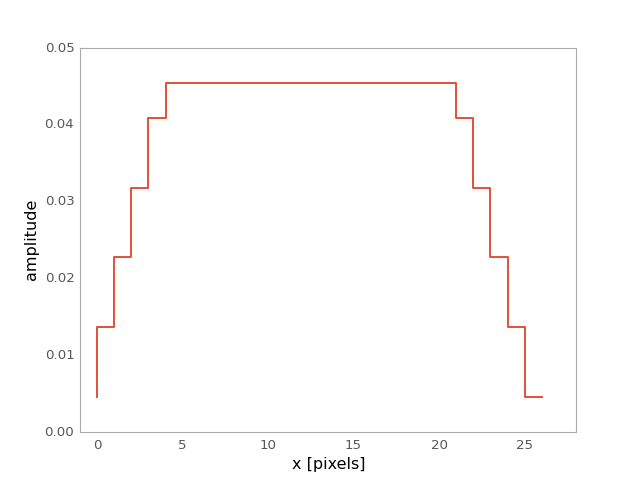

Trapezoid1DKernel¶
-
class
astropy.convolution.Trapezoid1DKernel(width, slope=1.0, **kwargs) [edit on github][source]¶ Bases:
astropy.convolution.Kernel1D1D trapezoid kernel.
Parameters: width : number
Width of the filter kernel, defined as the width of the constant part, before it begins to slope down.
slope : number
Slope of the filter kernel’s tails
mode : str, optional
- One of the following discretization modes:
- ‘center’ (default)
Discretize model by taking the value at the center of the bin.
- ‘linear_interp’
Discretize model by linearly interpolating between the values at the corners of the bin.
- ‘oversample’
Discretize model by taking the average on an oversampled grid.
- ‘integrate’
Discretize model by integrating the model over the bin.
factor : number, optional
Factor of oversampling. Default factor = 10.
See also
Examples
Kernel response:
import matplotlib.pyplot as plt from astropy.convolution import Trapezoid1DKernel trapezoid_1D_kernel = Trapezoid1DKernel(17, slope=0.2) plt.plot(trapezoid_1D_kernel, drawstyle='steps') plt.xlabel('x [pixels]') plt.ylabel('amplitude') plt.xlim(-1, 28) plt.show()
(Source code, png, hires.png, pdf)

{kind=link}
{kind=link}